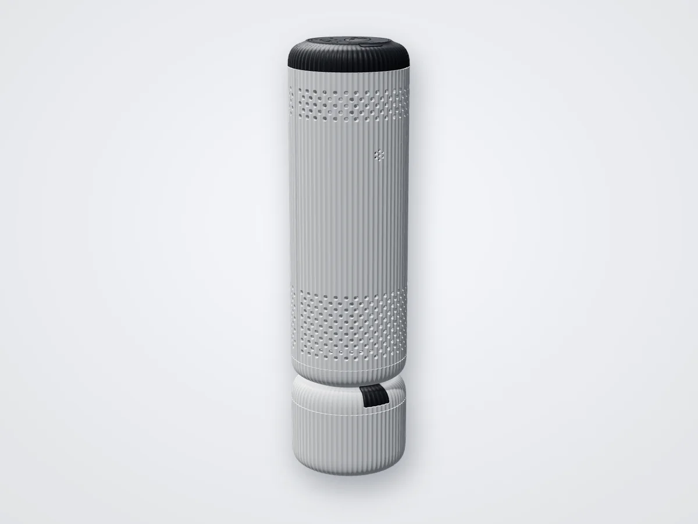
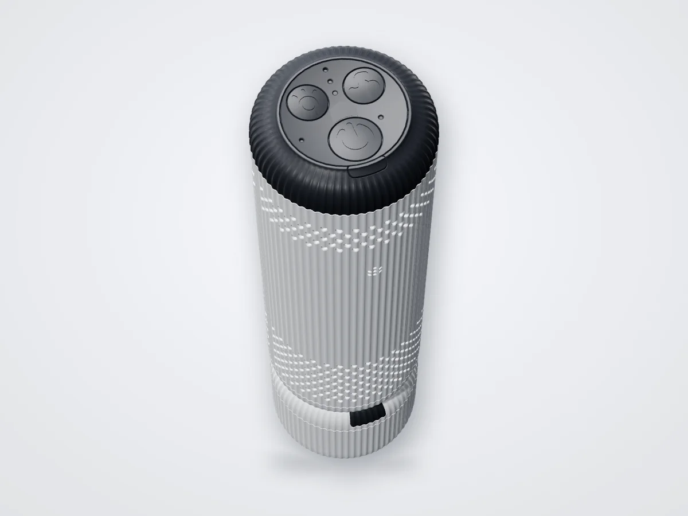

생활가전 · 조명
차량용 미니 공기청정기
차량과 실내에서 쓰는 원통형 미니 공기청정기의 제어 보드를 개발했습니다. 작은 본체 안에 센서, 팬 구동, 배터리 회로를 담았습니다.
- 팬 모터 구동 및 풍량 단계 제어
- 가스 센서 기반 공기질 감지
- 배터리 팩 구동, USB-C 충전 회로
- 상단 버튼 조작부와 상태 표시
수행 범위 · 회로 설계 / PCB 아트웍 / 펌웨어